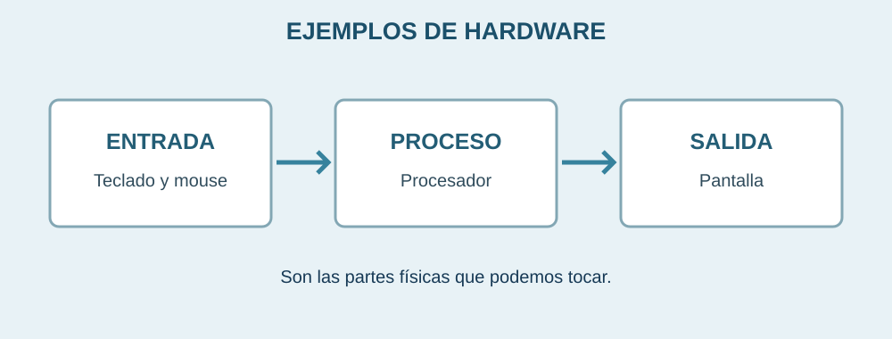

Hardware y periféricos

El hardware es la parte física de un equipo de cómputo: todo lo que podemos tocar, como la pantalla, el teclado o los componentes que están dentro del gabinete.
Tipos de dispositivos
Entrada
Permiten introducir datos. Ejemplos: teclado, mouse y micrófono.
Proceso
El procesador y la memoria ayudan a ejecutar las instrucciones de los programas.
Salida
Muestran resultados. Ejemplos: monitor, bocinas e impresora.
Componentes importantes
| Componente | Función |
|---|---|
| Procesador (CPU) | Ejecuta instrucciones. |
| Memoria RAM | Guarda temporalmente datos que se están utilizando. |
| Almacenamiento | Conserva archivos y programas. |
| Monitor | Muestra información e imágenes. |